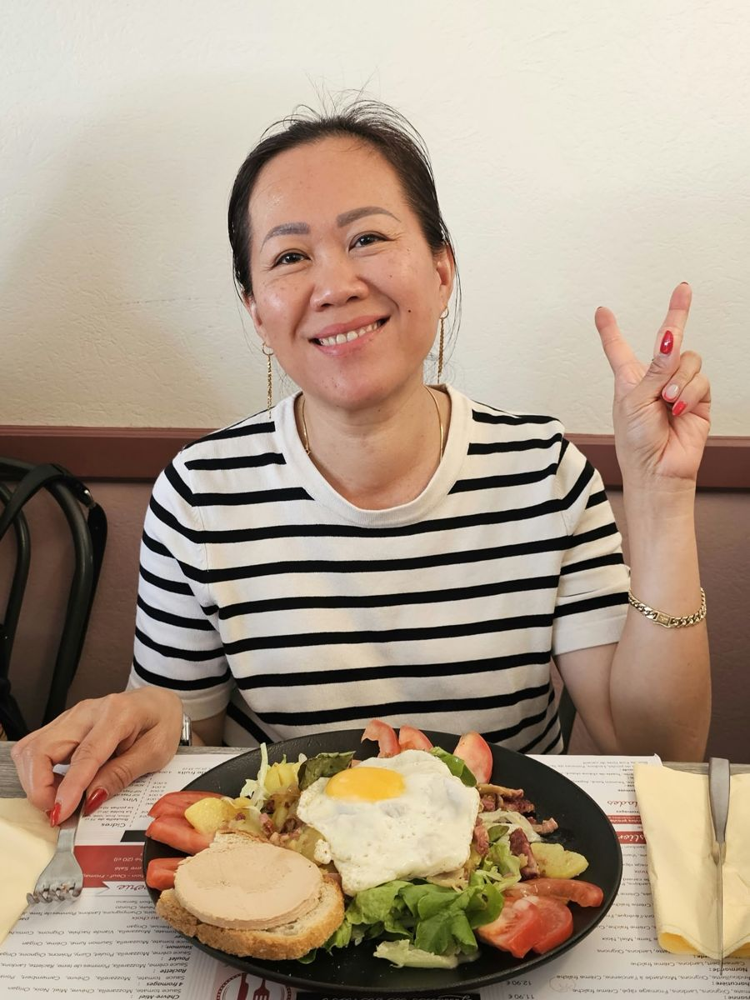
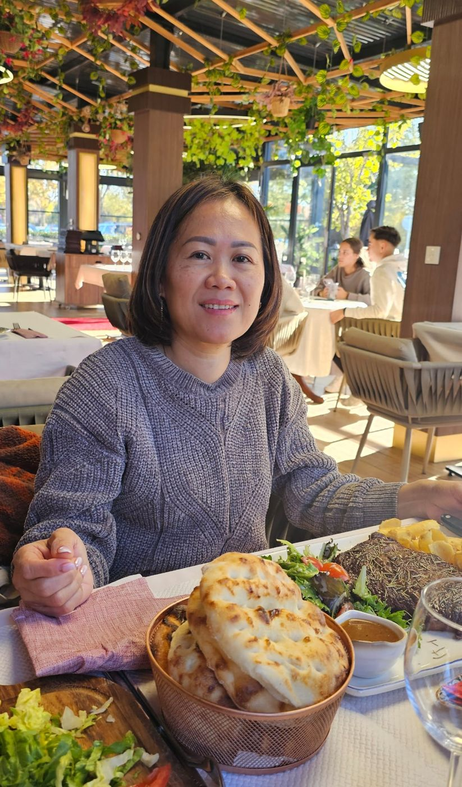
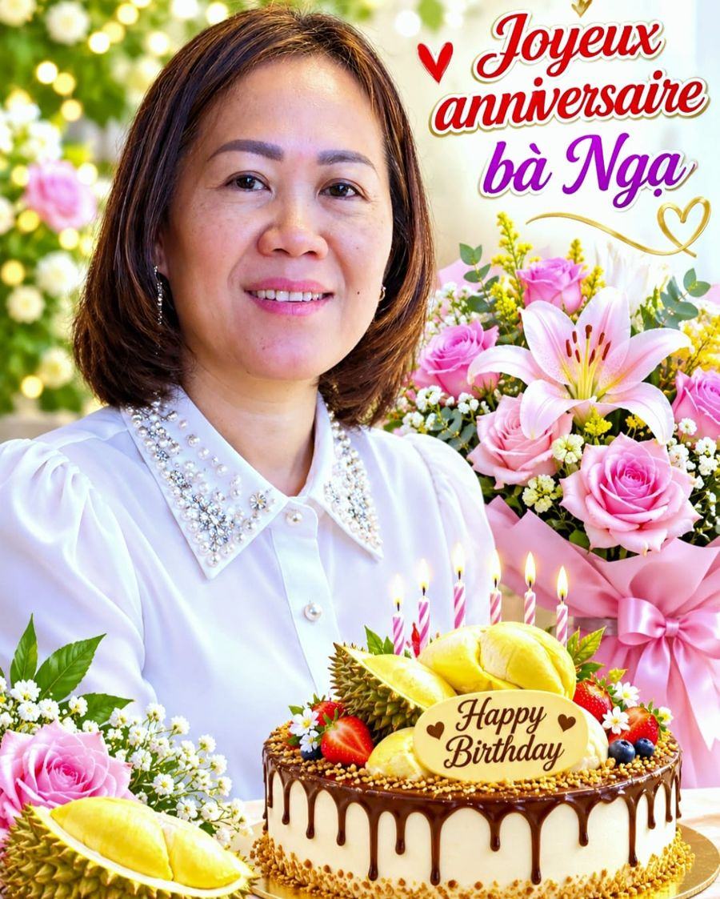

Tata Nga,
la Reine des Ongles
Il était une fois, à Évry…
Il était une fois, dans l'Essonne, au cœur du quartier du Mousseau, une reine. Pas une reine avec une couronne (ça décoiffe). Une reine avec dix ongles. Dix ongles nickel, propres, brillants, design, stylés.
Quand Tata Nga lève la main dans la rue, les lampadaires du quartier se mettent en veille : ils ne servent plus à rien. Et les avions qui passent au-dessus d'Évry font un petit coucou avec les ailes. Par respect.
Nom : Tata Nga
Titre : Reine Esthéticienne, Grande Manucure du Mousseau
Super-pouvoir : transforme n'importe quelle main en œuvre d'art
Point faible : repère un ongle mal limé à 50 mètres. Dans le noir.
V comme… Vernis

Ici, Tata Nga fait le signe V. Les gens croient que c'est pour « Victoire ». Erreur. V comme Vernis. V comme Vermillon. V comme « Vous avez vu mes ongles ? ».
Même l'œuf au plat est impressionné : il s'est mis au garde-à-vous, le jaune parfaitement centré, sans une bavure. Le serveur a raconté plus tard : « Elle a regardé l'assiette, puis elle a regardé mes mains… et elle m'a laissé sa carte de visite. »
Mission secrète au restaurant

Officiellement, Tata Nga est venue manger une belle pièce de bœuf. Officiellement.
En réalité, c'est une mission d'inspection. Regardez sa main : manucure nude, discrète, ultra chic. C'est le mode « agent secret ». Derrière elle, deux clients chuchotent : « C'est elle… la Reine du Mousseau ! »
Le chef cuisinier a fait trois fois le tour de la salle avec les mains dans les poches. Et le pain dans la corbeille a gonflé de fierté : c'est la première fois qu'il est touché par des ongles aussi bien faits.
Le gâteau qui voulait une manucure

Pour son anniversaire, le gâteau est arrivé avec du durian dessus. Le durian, ce fruit tellement piquant que même les limes à ongles lui disent « vous ».
Les bougies, elles, ont refusé de s'allumer tant qu'elles n'avaient pas eu leur pose de vernis rose et blanc. C'est pour ça qu'elles sont rayées. Et les roses du bouquet ont demandé un rendez-vous pour une manucure. Réponse : complet, liste d'attente jusqu'en 2027.
La légende du Mousseau
On raconte qu'à Évry, quand un ongle se casse quelque part, un petit vent parfumé souffle sur le Mousseau. Et Tata Nga apparaît, avec sa trousse magique : lime, pinceau, paillettes.
Trois minutes plus tard, l'ongle est réparé, la personne sourit jusqu'aux oreilles, et elle repart avec une manucure tellement brillante qu'on la voit depuis la Lune. 🌙✨
Moralité : on peut tout rater dans la vie… sauf ses ongles quand on connaît Tata Nga.
Tata Nga !
Chúc mừng sinh nhật Tata Nga!
Chúc Tata một tuổi mới thật nhiều sức khỏe, hạnh phúc và bình an.
Luôn xinh đẹp, rạng rỡ và thành công, với đôi bàn tay khéo léo nhất!
Cả gia đình luôn yêu thương Tata rất nhiều. ❤️
« Joyeux anniversaire Tata Nga ! Nous te souhaitons une nouvelle année pleine de santé, de bonheur et de paix. Reste toujours belle, rayonnante et pleine de réussite, avec les mains les plus habiles du monde ! Toute la famille t'aime très fort. »
Joyeux anniversaire à la plus stylée des tatas ! Que ta nouvelle année soit brillante comme un vernis tout frais, solide comme un gel UV, et pleine de rires, d'amour et de bons petits restos.
Gros bisous de toute la famille Tanseri-Lescure 💖
Nieu, Nounou, Dayvon, Noa et Alexis